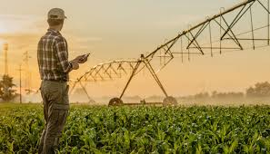

Acessibilidade e Água

O acesso à água potável e à infraestrutura de mobilidade são direitos básicos que ainda enfrentam obstáculos nas regiões rurais. No Paraná, há iniciativas voltadas à perfuração de poços, proteção de nascentes e à construção de sistemas de abastecimento que beneficiam comunidades isoladas.
Além disso, acessibilidade envolve garantir estradas transitáveis, transporte adaptado e acesso a serviços essenciais como saúde e educação, promovendo a inclusão das populações rurais, especialmente de pessoas com deficiência.
Soluções em Ação
- Projetos de saneamento básico em parceria com municípios;
- Programas estaduais de mobilidade rural acessível;
- Campanhas de conscientização sobre uso racional da água.
Impacto na Qualidade de Vida
Com melhorias estruturais e sociais, populações do campo conquistam autonomia, saúde e dignidade, contribuindo com o crescimento equilibrado entre campo e cidade.